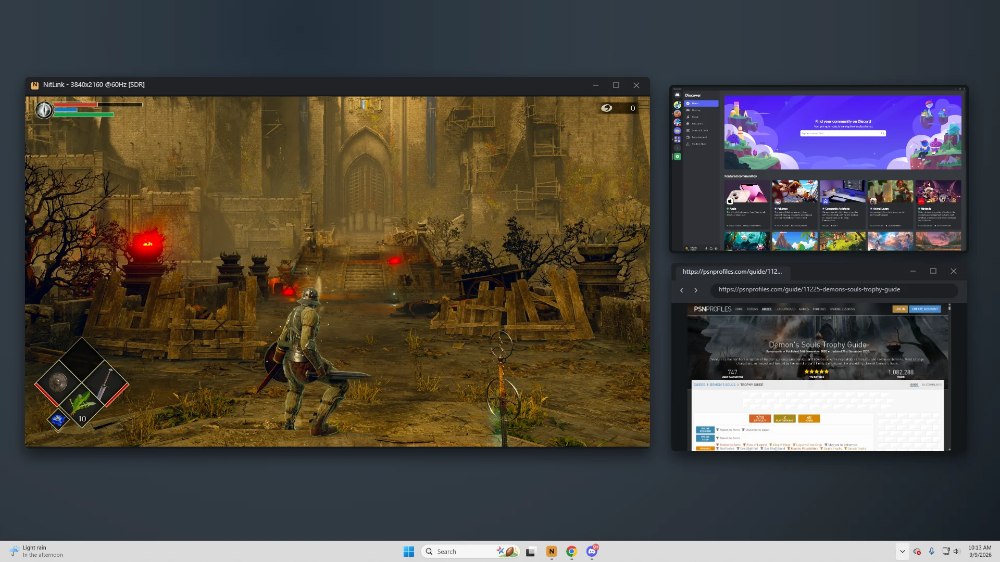
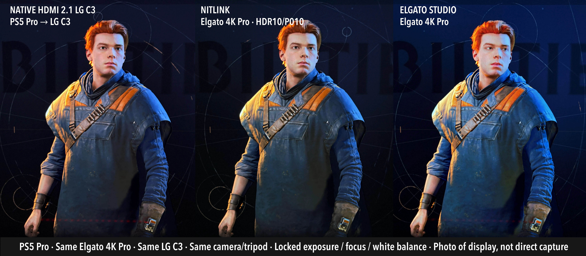
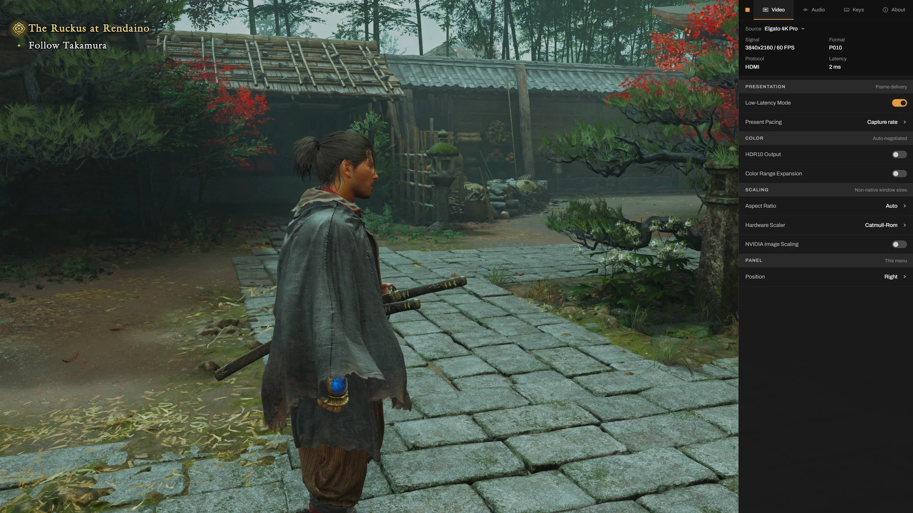
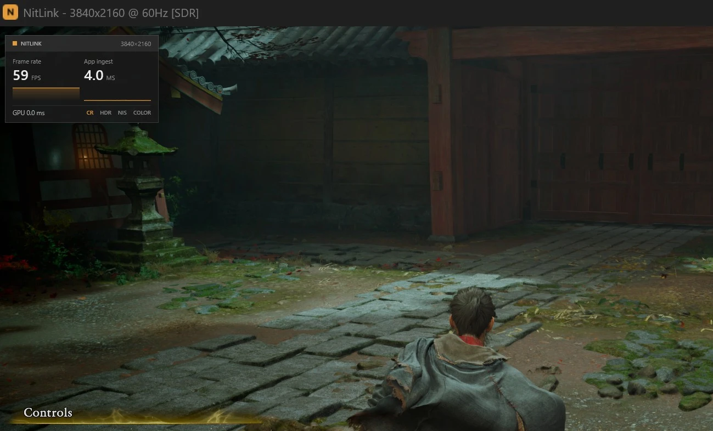

NitLink for Windows
Your console.On your PC.
Play your console in a Windows window, with HDR10, variable refresh, and measured low latency. Keep your game and the rest of your desktop on the same screen.

Native HDR10
Keep your game in HDR.
A native 10-bit capture path carries HDR10 from your console to your display. NitLink follows HDR sources automatically on the Elgato 4K Pro and 4K X.
{kind=link}

Requires an HDR display with Windows HDR enabled. The 4K S supports manual HDR at 1080p.
Low-latency preview
Less delay.
Measured.
NitLink presents captured frames as they arrive. In back-to-back tests against Elgato’s 4K Capture Utility, it was faster on the 4K Pro and 4K S, and statistically tied on the 4K X.
See how it was tested100 samples per app and card. Compare apps within each pair; different source modes do not rank the cards.
Full results and test setup
| Card / source | NitLink | Elgato | Difference |
|---|---|---|---|
| 4K Pro · 1080p144 | 38.4 ms | 44.2 ms | −5.9 ms |
| 4K X · 4K120 | 47.7 ms | 48.4 ms | Statistical tie |
| 4K S · 4K60 | 67.8 ms | 75.1 ms | −7.3 ms |
RTX 5080 · LG C3 OLED at 120 Hz · Windows 11 · NitLink 1.1 pre-release · June 5, 2026. Absolute results include the rig’s source and trigger path and are specific to this setup. Differences use unrounded medians.

The F1 settings panel
Make an adjustment.
Keep playing.
Change your capture source, picture settings, and audio without leaving the game. Press F1 to bring up the panel, make your change, and close it again.
Switch capture cards and formats without restarting.

Live performance HUD
See how your
capture is running.
Frame rate, app ingest latency, GPU time, and pipeline status are a keypress away. Use Ctrl + F3 to show the overlay while you play.
Read the current session directly, without opening another tool.
Fullscreen or picture-in-picture
Play fullscreen, or use Alt + O to pin the console in a corner. Share the window in Discord or capture it in OBS.
Variable refresh that follows the game
Source frame rate pacing detects duplicate frames on the GPU, so a compatible G-Sync or FreeSync display can follow the actual game frame rate.
Shortcuts, image controls, and requirements
- F1
- Open settings. Select a capture device and format, route audio, adjust volume, or mute.
- Alt + H
- Toggle HDR on supported capture paths. On the 4K S, switch between 4K SDR and 1080p HDR.
- Alt + O
- Toggle picture-in-picture. Ctrl + Arrows adjusts its position.
- Ctrl + F3
- Show frame rate, ingest latency, GPU time, and pipeline status.
- Ctrl + S
- Save a shareable PNG plus a true-HDR JXR file when capturing HDR.
- Image scaling
- Catmull-Rom resampling and optional NVIDIA Image Scaling for GPU upscaling and sharpening.
- Aspect ratio
- Auto, 4:3, 16:9, 16:10, 21:9, or stretch.
- Frame pacing
- Low-latency mode is on by default. The present-rate cap stays just below the display refresh when the source allows it. Source frame rate pacing can add up to one capture interval of latency.
- Display setup
- Enable Windows HDR on an HDR display. Variable refresh needs a compatible display with VRR enabled. Low-latency presentation may tear on fixed-refresh displays.
NitLink in action
See a full session.
From setup to a PS5 Pro game. An eight-minute walkthrough of HDR, variable refresh, and the controls in NitLink 1.1.
Watch on YouTubeYouTube loads only when you press play.
Capture card compatibility
- Elgato 4K Pro
- 4K60 HDR10
- Elgato 4K X
- Up to 4K120 capture
- Elgato 4K S
- 4K60 SDR / 1080p HDR
Cam Link 4K and Game Capture 4K60 Pro MK.2 are also supported. Other Media Foundation cards use the generic capture path.
Capture formats and system requirements
4K Pro: PCIe, HDMI 2.1. Automatic HDR detection and live source details. VRR passthrough; 120 Hz capture uses a lower resolution.
4K X: USB, HDMI 2.1. Automatic HDR detection. Native controls expose the source name, resolution, and HDR state. Available HDR formats depend on resolution and frame rate.
4K S: USB, HDMI 2.0. USB bandwidth limits HDR capture to 1080p. Use Alt + H to switch between 4K SDR and 1080p HDR.
Windows: Windows 10 (1809+) or Windows 11, a DirectX 11-capable GPU, and Microsoft Edge WebView2. HDR and VRR require a compatible display and enabled Windows/display settings.
Generic Media Foundation cards work without Elgato-specific controls. Report your hardware results.
About the project
NitLink started with a PS5 and a 42-inch monitor that was already the main PC display. The goal was to play the console in a normal window, without switching inputs or adding another screen.
NitLink is free, MIT-licensed, and developed by Klosed Lab.
Questions and support
Is it as fast as direct HDMI?
A capture card adds latency compared with a direct connection. NitLink minimizes the viewer’s part of that delay. For the least possible delay in competitive play, use a direct connection or HDMI passthrough. Low-latency presentation can tear on fixed-refresh displays.
Can I record with OBS?
Yes. Open the card in NitLink, then add NitLink as a Game Capture source in OBS. The same card can only be opened by one app at a time. Recording overhead depends on your hardware and OBS settings.
Does surround sound work?
The supported Elgato cards deliver stereo PCM to NitLink. Set the console to Linear PCM, 2.0 channels, to avoid losing dialogue or other channels in the card’s downmix.
How much CPU does it use?
About half of one CPU core at 4K60 on the project’s tested setup. Pixel processing runs on the GPU; the CPU handles capture and frame transfer. Usage varies with your card, resolution, GPU, and processing options.
Why does SmartScreen warn?
The executable isn’t code-signed yet. Get it from the official GitHub releases. If you’ve verified the download and choose to run it, select “More info,” then “Run anyway.” The source is public.
How do I install it? Is it free?
Download the release ZIP, extract it, and run NitLink.exe. It’s free and MIT-licensed, with no account or telemetry. You can support development through Ko-fi.